세상에 달팽이 스웨터란 게 왜 있는 걸까? 어쩌다가 달팽이에게 스웨터를 입힐 생각을 했는지 궁금하다.. 심심해서 도안 구경을 하다가 달팽이 스웨터란 것을 발견하고 당장 다운 받았다. 반려달팽이를 돌보는 친구가 떠올라서 함떠봐? 생각하다가 뭔가 좀더 특별하게 만들어볼 수 없을까 고민이 시작됐다.
달팽이 스웨터 도안이라는 게 사실 별 거 없이 달팽이집 위에 걸치는 비니 같은 걸 뜨고 거기에 작은 꽃 장식을 올리는 것이었어서, 이걸 응용해서 원하는 장식을 꾸며낼 수 있겠구나 싶었다. 그럼 뭘 만들까 고민하다가 부포를 만들까? 생각이 튀었다. 달팽이집에 얼추 씌울 수 있게 만들기 쉬운 풍물 관련 악세서리여서 생각이 그리로 튄 것 같다.
부포란.. 이전까지 부포를 자세히 볼 일이 없어서 이번에 뜨면서 이걸 보고 많이 참고를 했는데, 아마도 내 눈에 익숙한 건 부포상모, 뻣상모? 인 것 같다. 조류의 깃털을 이용하여 제작한 것이고 꽃이 피고 지는 것처럼 오무렸다 폈다 하는 모양새로 춤을 춘다.
구글에 검색하니 이런 영상이 나오네..
일단 달팽이스웨터 원본 도안에서 스웨터-비니 같은- 형태는 그대로 활용했다. 골무 모양으로 도안을 알려주고 있어서 검은 실로 뚜껑부터 따라 뜨다가, 상모의 챙을 따로 떠서 붙일지 스웨터에 그대로 이어 뜰지 고민을 했는데, 그대로 이어 뜨는 게 편할 거 같아서 뚜껑의 적당한 시점에 앞이랑뜨기(코의 앞쪽의 실만 걸어 뜨는 방법)로 한길긴뜨기, 2코씩 늘려뜨기 해주어서 챙을 둘러주었다. 2코씩 늘려뜨기 하다 보니 챙이 좀 울렁이는 거 같아서 적절히 코수는 조절해가며 챙을 떴다. 판판한 챙이 포인트라고 생각했다..
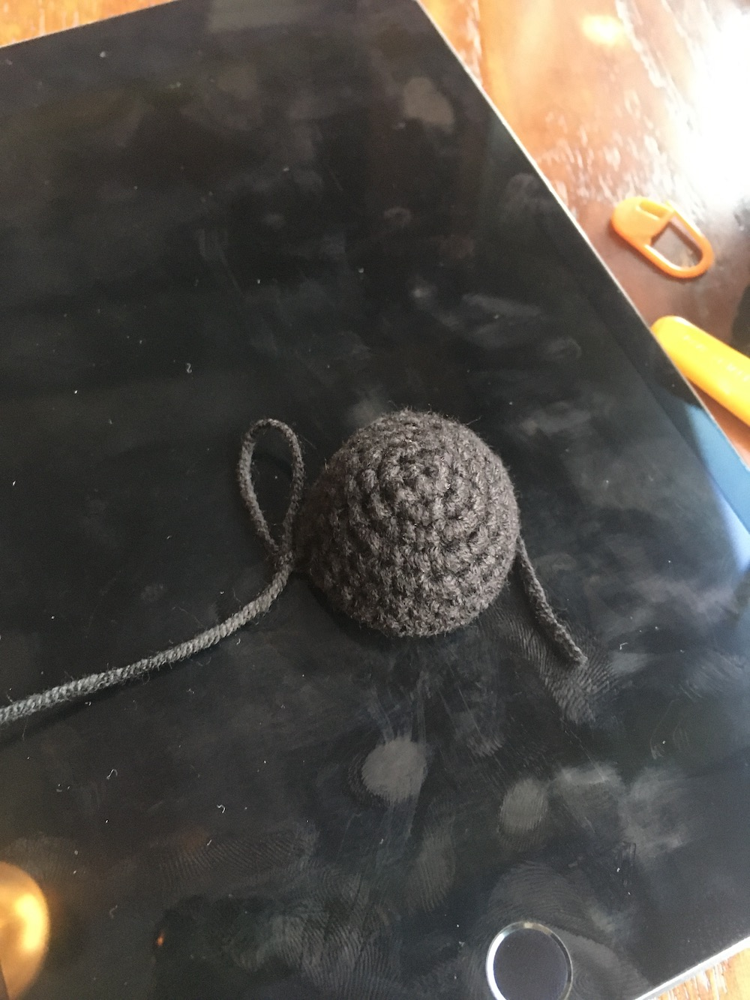 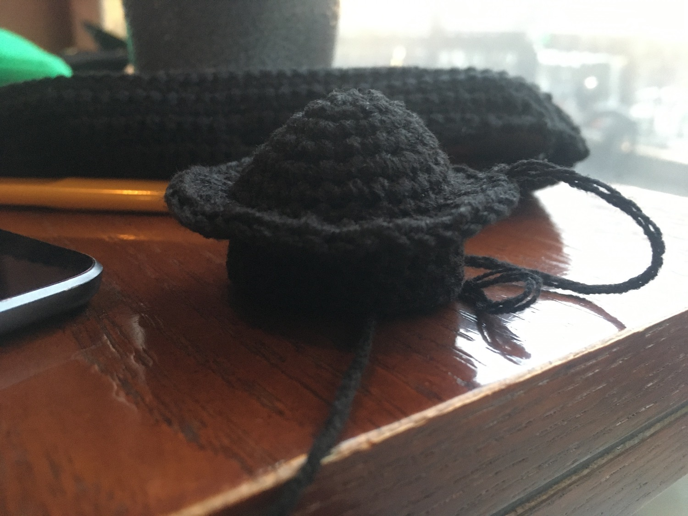판판한 챙까지 뜨고 나서 실 마무리해주고 스웨터의 아래 부분을 마저 떠줬다. 부포 상모 착용방법에 따르면, 상모 아래는 흑포천을 쓰고 꽃을 두르는 영역이다. 그래서 그 모양새를 고려해서 흑포천 영역을 짧은뜨기로 아래로 떠갔는데, 실제로 흑포천을 머리에 두르면 꽃을 두르는 이마 영역을 좀더 넓게 잡아야 하는 것을 깨달았다. 그래서 마지막 단의 가운데 5코는 긴뜨기로 살짝 영역이 넓어지게 굴곡이 지게 마무리했다.
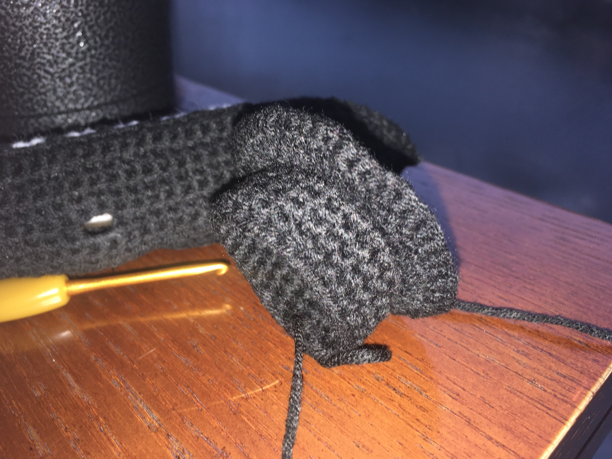여기까지는 기본적인 모자 모양이라 사실 큰 어려움이 없었다. 문제는 지금부터다..
달팽이용 뜨개부포를 만들면서 어느 정도로 구현할 수 있을까, 어느 정도로 구현하고 싶은가 고민을 해봤을 때 일단 가운데 지지대가 꼿꼿하게 서기를 원했다. 모자와 지지대의 연결고리가 자유롭게 돌아가는 것까지는 구현할 수도 없었을 뿐더러, 달팽이에게 얹었을 때도 달팽이가 마구 부포를 돌릴 수는 없었기 때문에 자유로운 지지대의 구조로는 내가 원하는 부포의 형태를 유지할 수 없을 거라고 생각했다. 그래서 꼿꼿한 지지대 역할을 할 철사 같은 뭔가를 생각하다가 쉽게 빵끈이 떠올라서 집 어딘가 있던 빵끈을 찾아냈다. 빵끈에 하얀 실을 본드로 둘둘 감아 붙이고, 상모의 정수리에 꽂아넣기로 결정했다.
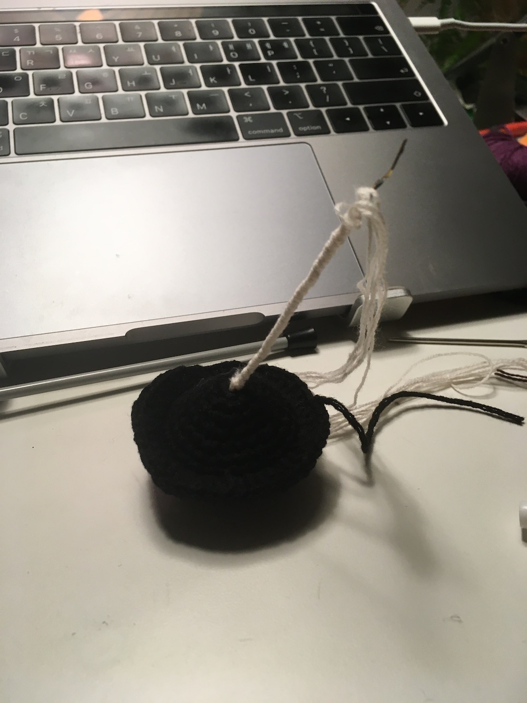 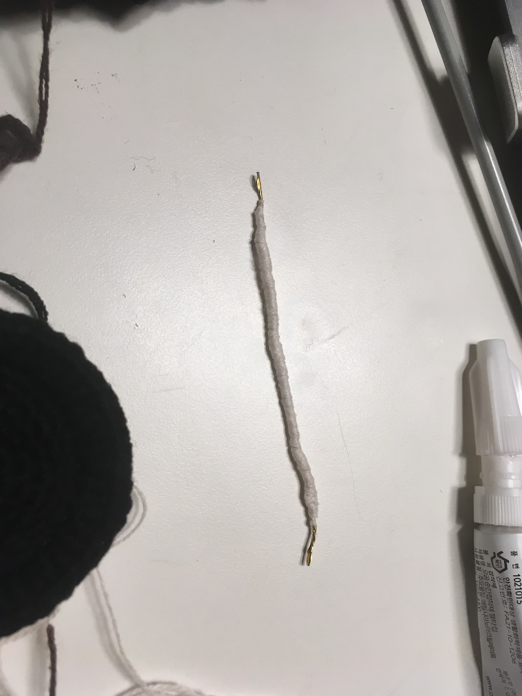아직도 용어는 잘 모르겠지만.. 하여간 이런 상품 페이지를 참고하면서 ‘진자’ 부분에 구슬 같은 뭔가 장식품을 써야 겠다고 생각을 했다. 그래서 뭘할까 고민하다가 일단 만만한 게 6색 무지개여서 무지개 뭔가로 장식은 해야 겠는데, 작은 구슬 형태로 만들어서 빵끈에 꽂아넣으려는 영 쉽지 않아서 그냥 이중사슬로 짧고 굵게 조각을 만들어서 6색 순서대로 올록볼록한 형태로 자리잡게끔 본드로 붙였다. 그리고 원래 상모와 진자를 연결하는 부분은 갈색 실로 마찬가지 이중사슬로, 근데 살짝 원뿔 형태가 되도록 떠서 붙였다. 이거 만들면서 다시 느꼈지만 순간접착제는 정말 굉장한 발명품이다.
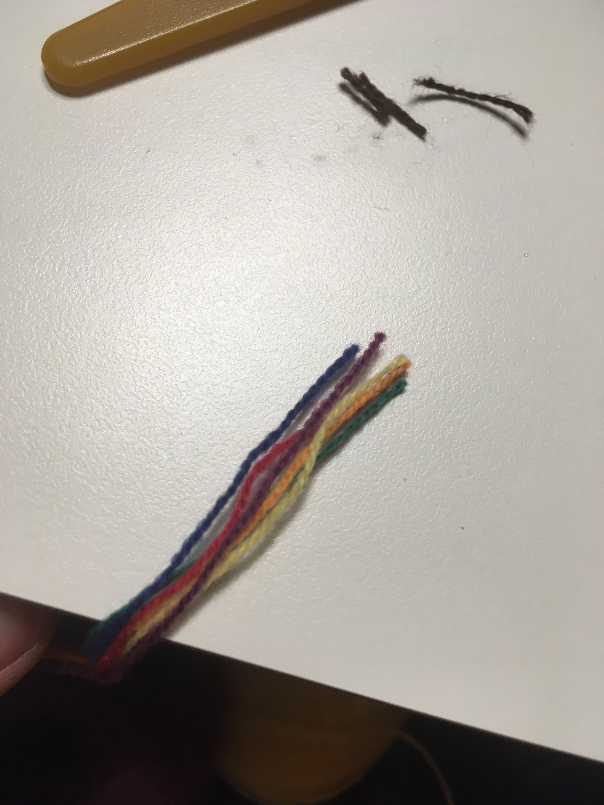 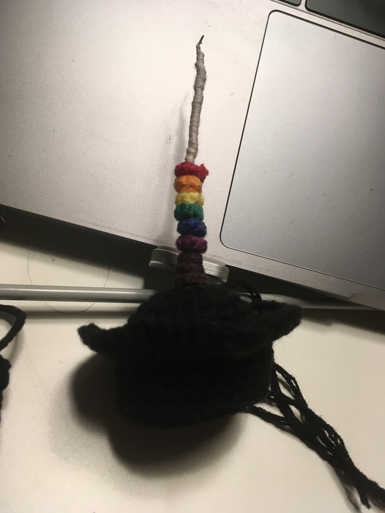여기까지도 뭐 빵끈과 순간접착제로 대충 얼버무릴 수 있었는데 꽃 모양의 상모는 어떻게 구현하나 짧게 고민했다. 일단 펄럭이는 형태는 아무래도 무리였다. 달팽이가 화려하게 상모를 돌릴 수 없기 때문에 현실적으로 불가능했고.. 원본은 조류의 털을 사용하는데 깃털의 형태를 뜨개로 구현하는 것도 좀 그랬다. 이런 건 원본을 굳이 따를 필요는 없는 것 같다.. 하여간 그래서 어쩔 수 없이 하얀 실을 세 손가락 정도에 타래로 감아서 가운데를 쪼매준 후 감은 실의 양 끝을 잘라주고 뭉쳐있는 실을 다 풀어줬다. 이런 건 아마 옛날옛적 공예하던 시절에 배웠을까 기억이 안나네..상모 가운데는 보통 빨간 중심점을 두는 것 같았는데 대충 6색 무지개실을 뭉쳐서 마무리했다.
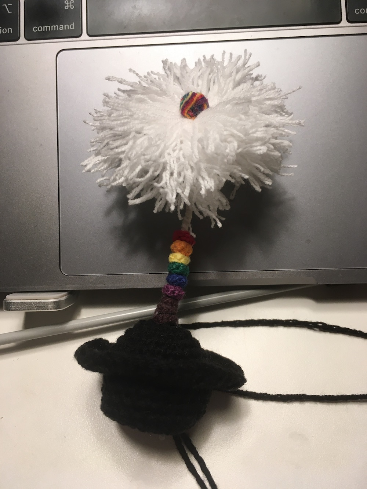다시 상모로 돌아가서 뚜껑에 하얀 끈을 원본과 유사한 형태로 감아서 본드로 손쉽게 붙여버리고, 챙의 가장자리는 원래 짧뜨로 둘러줬다가 챙이 너무 넓어지는 거 같아서 그냥 돗바늘로 감아줬다.
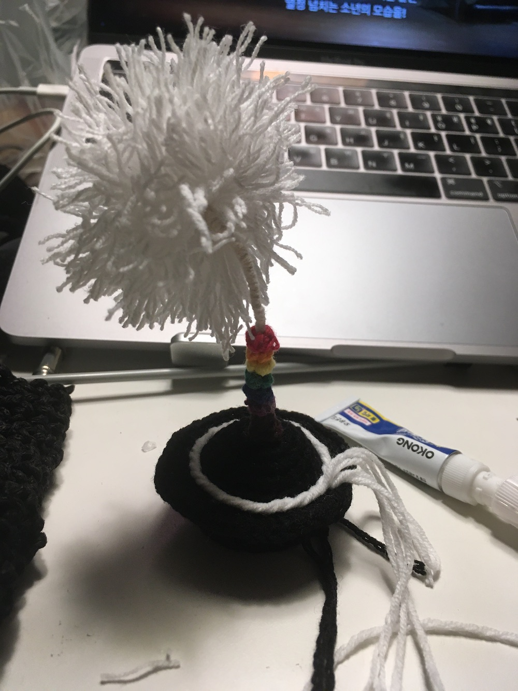진짜 마무리 단계인 꽃! 원본 도안에 꽃 뜨는 방법이 있어서 그걸 2개 떠서 꽃 형태로 잘 말아줬고, 꽃 끈은 머리 땋는 방식으로 끈을 만들어서 꽃에 달았다. 이것도 그냥 본드로 고정할까 하다가 왠지 모르게 이건 실로 고정해줬다.
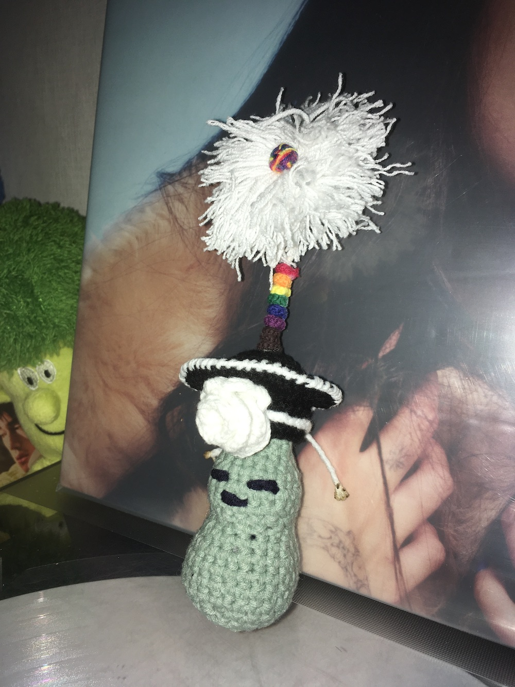본드 자국도 좀 보이고 조금 꼬질꼬질하게 완성하긴 했지만.. 그래도 완성을 했습니다~

다 완성하고 보니 달팽이스웨터는 그냥 이용당한 거 같고 실제로 달팽친구에게 그다지 쓸모도 없어보이긴 했지만.. 재밌으면 그만!!!
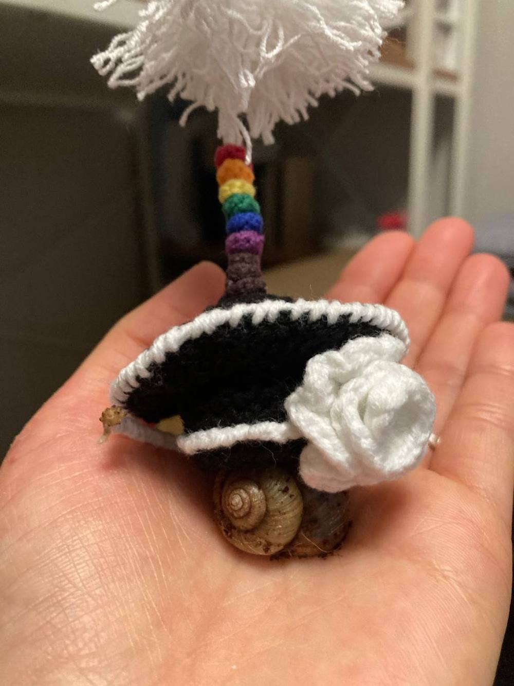